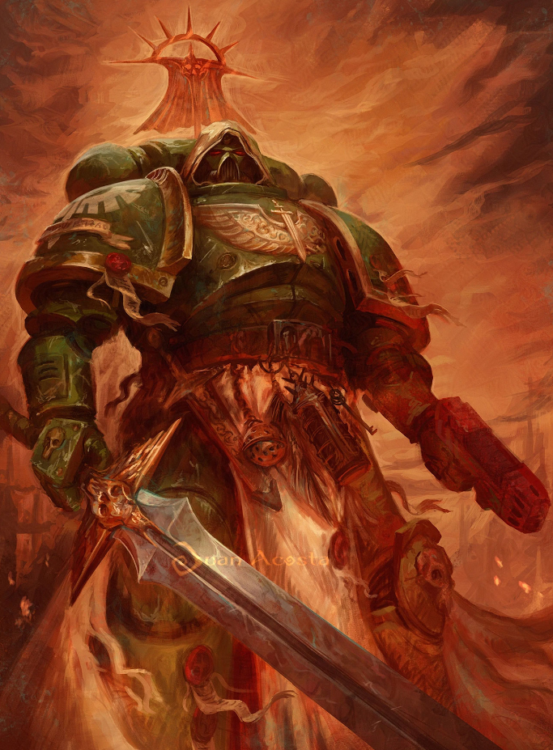

Dossier Astartes 001.M31
Les Dark Angels furent la Première Légion. Avant les autres. Avant les doctrines. Avant les mythes.
Ils furent conçus pour être l’arme absolue de l’Empereur, une force capable d’accomplir les missions que nul autre ne pouvait mener.

Lorsque le Lion fut retrouvé sur Caliban, la légion adopta une culture marquée par les chevaliers, les ordres secrets et les serments.
Caliban était un monde de forêts immenses et de monstres anciens. Les guerres contre ces créatures forgèrent l’identité du Lion et de ses guerriers.
Sous le commandement de Lion El’Jonson, les Dark Angels devinrent une force d’élite redoutée même parmi les autres légions.
Discipline. Silence. Efficacité.
Leur réputation reposait autant sur leurs victoires que sur le mystère qui les entourait.
Durant la Grande Croisade, ils furent souvent employés dans des campagnes sensibles ou particulièrement dangereuses. Certaines archives évoquent même l’utilisation d’armes interdites et de protocoles classifiés.
Puis vint l’Hérésie d’Horus.
Les Dark Angels ne furent pas détruits par une invasion extérieure. Ils furent brisés de l’intérieur.
Une partie de la légion se retourna contre le Lion sous l’influence de Luther. La guerre éclata sur Caliban.
La planète fut dévastée. Les conséquences dépassèrent tout contrôle.
Les Déchus disparurent à travers le Warp.
Depuis ce jour, les Dark Angels poursuivent une guerre secrète.
Officiellement, ils servent l’Imperium avec loyauté. Officieusement, ils traquent les Déchus sans relâche, quitte à dissimuler des vérités, manipuler des alliés, ou éliminer ceux qui en savent trop.
Cette obsession structure désormais tout le chapitre.
Cercles intérieurs. Secrets hiérarchiques. Vérités fragmentées.
Peu de membres connaissent réellement l’ampleur de la faute originelle.
Les Dark Angels restent pourtant parmi les Space Marines les plus efficaces de l’Imperium. Leur discipline est intacte. Leur arsenal immense. Leur détermination absolue.
Mais derrière leurs bannières, derrière leurs rites, derrière leur silence, demeure une peur constante.
Que la vérité soit révélée.
Il faut comprendre ceci.
Les Dark Angels ne combattent pas seulement les ennemis de l’Imperium.
Ils combattent également leur propre passé.
Fin de l’extrait. Accès aux archives du Cercle Intérieur strictement interdit sans autorisation de niveau suprême.